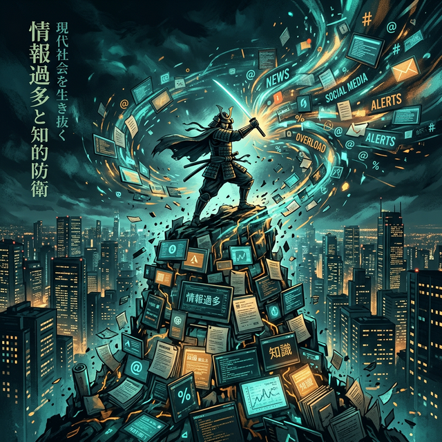

余談ながら、筆者はこの令和八年三月という季節を眺めるにつけ、かつての戦国武将たちが陣を張る際に、あえて兵を絞り込んで敵の急所を突いた「寡兵（かへい）の戦術」を思い起こさざるを得ない。現代の我々にとって、敵とは寄せては返す情報の波であり、重なり合うプロジェクトの奔流である。今、我々に求められているのは、全方位への拡大ではない。血の通った「優先順位」という名の、峻烈な選別なのである。
一、技術的・構造的視点：モジュール分離という『疎結合』の勝利
構造的に見れば、今回の週刊計画の核心は「分離」という概念にある。技術的視点から言えば、プロジェクト管理ツール（PM Tool）におけるモジュールの切り離しが完了したことは、単なるソフトウェアの改修ではない。それは、複雑に絡み合ったタスクの糸を解き、システム全体の依存関係を最小化する、いわゆる疎結合（Loosely Coupled）の実現に他ならない。
「複雑なものを単純に保つこと。これこそが、あらゆる兵法と技術における究極の奥義である」
この「分離」によって得られた余剰工数を、手当たり次第に消費するのは愚策である。兵力を「ヒューマノイドHub」という戦略的拠点に転進させ、目前の課題調査という偵察任務に充てる。この資源配分こそが、文明社会を生き抜くためのプロジェクトマネジメントの真髄であろう。
二、個人的体験：喉を震わせる『信義』の旋律
翻って、この乾いた論理の対極にあるのが、個人的な表現の領域である。三月六日の金曜日に設定された「ハモリ曲」の完遂というマイルストーン。これは一見、業務とは無縁の風雅な遊びに見えるかもしれない。しかし、人間という生き物は、論理だけでは動かぬものである。社（やしろ）氏との共鳴を目指すその暗記のプロセスは、かつての武士が戦場（いくさば）で名乗りを上げる際の声の張りに似ている。キャリア思考におけるアウトプット、すなわち「LINEつぶやき式」のプロセス録は、孤独な思考の断片を社会という大海へと繋ぎ止める、魂の通信回路なのである。
三、社会的視座：『山』を下り、『語』を伏せる戦略的撤退
社会的・システム的な側面において、日本社会は今、慢性的な「工数逼迫」という病に侵されている。その中で、あえて「山登り」や「外国語学習」といった有益な研鑽を一時的に封印（アーカイブ）するという決断は、社会システムへの静かな抗議とも取れる。これは、かつての日本海軍が圧倒的な物量を誇る敵を前にして、あえて戦線を縮小した「戦略的撤退」に似ている。
💡 余談：構造的考察
この計画案には、3月1日の「エンジェルカード作成」という情緒的な儀式から始まり、週末の「ロボティクス・AIのリサーチ」という理性的総括で終わるという、見事な双極のバランスが組み込まれている。これはまさに、人間（Humanoid）と知能（AI）の融合を模索する現代人の、ひとつの理想的な防衛陣形といえるだろう。リサーチという行為は、単なる知識の蓄積ではなく、未来に対する「弾薬」の補充なのである。
来週という戦場を、諸君はいかに駆け抜けるか。まずは、明日という日の「カード作り」という小さな一歩から、この壮大な城郭の礎石を積み上げようではないか。歴史は、常に細部に宿る執念によって作られるのである。